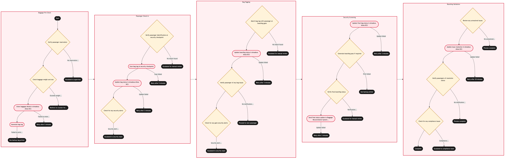

Updated 2026-08-21
Baggage Acceptance and Tag Issue
Process flow
Click to zoom

Process steps
▼
Phase 1 — Baggage Pre-Check
4 steps
| Step | Activity | Role | System | Input | Output | KPI | Dec | Exc | Pain point |
|---|---|---|---|---|---|---|---|---|---|
| 1.1 | Verify passenger reservation | Air Canada CSR Agent | Amadeus Altea DCSA | Passenger's identification and flight details | Reservation confirmation | 95% accuracy within 30 seconds | Y | N | Incorrect reservations leading to manual overrides. |
| 1.2 | Check baggage weight and size | Baggage Agent | Manual check-in systemU | Passenger's luggage dimensions and weight | Weight and size validation | 98% compliance within 1 minute | Y | N | Overweight bags causing delays. |
| 1.3 | Enter baggage details in Amadeus Altea DCS | Baggage Agent | Amadeus Altea DCSA | Baggage description and weight | Bag record created | 90% successful entries within 2 minutes | N | Y | System downtime affecting data entry. |
| 1.4 | Generate bag tag | Baggage Agent | Manual check-in systemU | Bag record from Amadeus Altea DCS | Physical bag tag | 99% successful tag generation within 30 seconds | N | Y | Tag printer malfunctions causing delays. |
▼
Phase 2 — Passenger Check-In
4 steps
| Step | Activity | Role | System | Input | Output | KPI | Dec | Exc | Pain point |
|---|---|---|---|---|---|---|---|---|---|
| 2.1 | Verify passenger identification at security checkpoint | Security Officer | Manual verification systemU | Passenger's ID and bag tag | Identification confirmation | 97% accuracy within 60 seconds | Y | N | Misidentification leading to delays. |
| 2.2 | Scan bag tag at security checkpoint | Security Officer | Manual verification systemU | Bag tag barcode | Tag scan confirmation | 98% successful scans within 30 seconds | N | Y | Scanner malfunctions affecting throughput. |
| 2.3 | Update bag status in Amadeus Altea DCS | Security Officer | Amadeus Altea DCSA | Tag scan confirmation | Bag status updated | 95% successful updates within 1 minute | N | Y | System lag causing delayed updates. |
| 2.4 | Check for any security alerts | Security Officer | Amadeus Altea DCSA | Bag status and passenger record | Alert check result | 90% alert checks within 1 minute | Y | N | False positives causing unnecessary delays. |
▼
Phase 3 — Bag Tagging
4 steps
| Step | Activity | Role | System | Input | Output | KPI | Dec | Exc | Pain point |
|---|---|---|---|---|---|---|---|---|---|
| 3.1 | Match bag tag with passenger at boarding gate | Boarding Agent | Baggage Reconciliation System (BRS)U | Passenger and bag tag information | Tag-to-passenger match confirmation | 98% successful matches within 2 minutes | Y | N | Missed or misplaced tags causing delays. |
| 3.2 | Update boarding status in Amadeus Altea DCS | Boarding Agent | Amadeus Altea DCSA | Match confirmation | Boarding status updated | 95% successful updates within 1 minute | N | Y | System downtime affecting boarding processes. |
| 3.3 | Notify passenger of any bag issues | Boarding Agent | Manual communication systemU | Bag status and passenger record | Notification sent | 90% notifications within 2 minutes | Y | N | Missed communications causing passenger confusion. |
| 3.4 | Check for any gate security alerts | Boarding Agent | Amadeus Altea DCSA | Bag status and passenger record | Alert check result | 90% alert checks within 1 minute | Y | N | False positives causing unnecessary delays. |
▼
Phase 4 — Security Screening
4 steps
| Step | Activity | Role | System | Input | Output | KPI | Dec | Exc | Pain point |
|---|---|---|---|---|---|---|---|---|---|
| 4.1 | Update final bag status in Amadeus Altea DCS | YYZ Operations Control Duty Manager | Amadeus Altea DCSA | Final boarding status and passenger record | Bag status updated | 95% successful updates within 2 minutes | N | Y | System downtime affecting final status updates. |
| 4.2 | Generate boarding pass if required | YYZ Operations Control Duty Manager | Amadeus Altea DCSA | Passenger and flight details | Boarding pass printed | 98% successful printouts within 1 minute | Y | N | Printer malfunctions affecting boarding processes. |
| 4.3 | Verify final boarding status | YYZ Operations Control Duty Manager | Amadeus Altea DCSA | Final boarding status and passenger record | Verification result | 95% successful verifications within 1 minute | Y | N | Incorrect verifications leading to delays. |
| 4.4 | Send final status update to Baggage Reconciliation System (BRS) | YYZ Operations Control Duty Manager | Baggage Reconciliation System (BRS)U | Final boarding status and passenger record | Update sent | 95% successful updates within 2 minutes | N | Y | System downtime affecting final status updates. |
▼
Phase 5 — Boarding Validation
4 steps
| Step | Activity | Role | System | Input | Output | KPI | Dec | Exc | Pain point |
|---|---|---|---|---|---|---|---|---|---|
| 5.1 | Review any unresolved issues | Baggage Compliance Agent | Manual review systemU | Unresolved issues and passenger records | Issue resolution plan | 90% issues resolved within 24 hours | Y | N | Complex issues requiring extended resolutions. |
| 5.2 | Update issue resolution in Amadeus Altea DCS | Baggage Compliance Agent | Amadeus Altea DCSA | Issue resolution plan | Resolution updated | 90% successful updates within 1 hour | N | Y | System downtime affecting issue tracking. |
| 5.3 | Notify passengers of resolution status | Baggage Compliance Agent | Manual communication systemU | Resolution plan and passenger records | Notification sent | 90% notifications within 1 hour | Y | N | Missed communications causing passenger confusion. |
| 5.4 | Check for any compliance issues | Baggage Compliance Agent | Amadeus Altea DCSA | Resolution plan and passenger records | Compliance check result | 90% successful checks within 1 hour | Y | N | False positives causing unnecessary delays. |
Swim lanes
Air Canada CSR Agent1.1
Baggage Agent1.2 1.3 1.4
Security Officer2.1 2.2 2.3 2.4
Boarding Agent3.1 3.2 3.3 3.4
YYZ Operations Control Duty Manager4.1 4.2 4.3 4.4
Baggage Compliance Agent5.1 5.2 5.3 5.4
Systems touched
Amadeus Altea DCSAManual check-in systemUManual verification systemUBaggage Reconciliation System (BRS)UManual communication systemUManual review systemU
Key performance indicators
- 95% accuracy in reservation verification
- 98% compliance in baggage weight and size checks
- 90% successful entries in Amadeus Altea DCS
- 99% successful tag generation
- 97% accuracy in security identification
Risks and control points
- System downtime affecting data entry and updates
- Manual overrides due to incorrect reservations
- Tag printer malfunctions causing delays
- Scanner malfunctions affecting throughput
- Missed communications causing passenger confusion
Air Canada Process Wiki — process and systems reference compiled from public sources
for IT Application Management and User Support pre-sales discovery.
Built 2026-08-21. Every system carries an evidence tier: tier C is an industry pattern and tier U is an open
question, and neither should be asserted as fact about Air Canada without confirmation in discovery.
Not affiliated with or endorsed by Air Canada. Air Canada, Aeroplan and Altitude are trademarks of Air Canada.